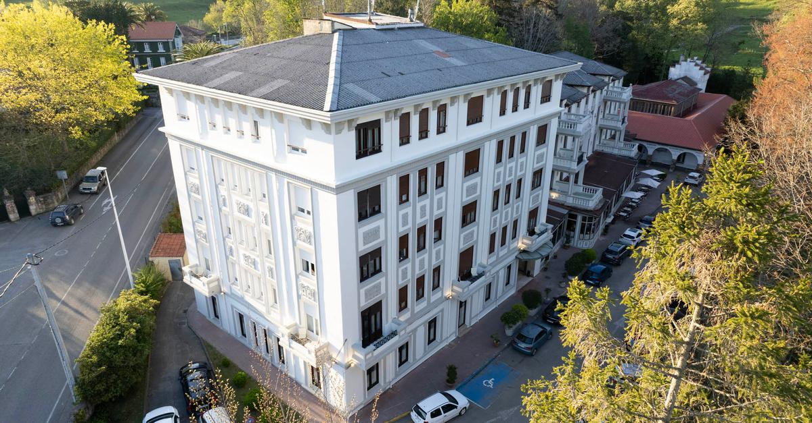

Friday — arrival & a slow soak
Land at Santander airport (SDR) or roll in from Bilbao. Resist the urge to sightsee — you have two days. Today is the unwind day.
Drive to Villaverde, drop the bags at Jardines Villaverde
Santander airport → Villaverde is ~20 minutes; Bilbao ~90. The aparthotel is on the same Plaza del Sol as the restaurant — Booking guest scores: 9.6 cleanliness, 9.8 location, 9.8 value across 471 reviews. The units come with kitchens, a saltwater pool, and a hot tub [3].
★ Only ~10 units. Book early. ★Down to the Miera valley — Liérganes
One of Los Pueblos Más Bonitos de España. 15 minutes south-east of the hamlet. Cross the 16th-c. Renaissance Puente Mayor (often mis-called "Roman"), photograph the Hombre Pez statue, find the cannon-decorated Casa de los Cañones, and read the local nickname for the twin hills above town on your own time [9].

Soak: the four-century-old Balneario de Liérganes uses sulphurated mineral-medicinal water from the Santa Fuente spring, declared of public utility in 1869, in a 3-ha park of centenary trees [10]. Day-spa entry is the move; the lodging package is the other move.
Dinner on the patio — keep it light
Eat a simple meal at the aparthotel or grab a tortilla and Albariño from a Santander pintxo bar (Casa Lita, ~€2.70/pincho [30]; La Bodega del Riojano for the Museo Redondo barrel-tops [29]). Save real hunger for tomorrow.
· Tonight: call the taxi company. Confirm Saturday 22:30 pick-up. ·